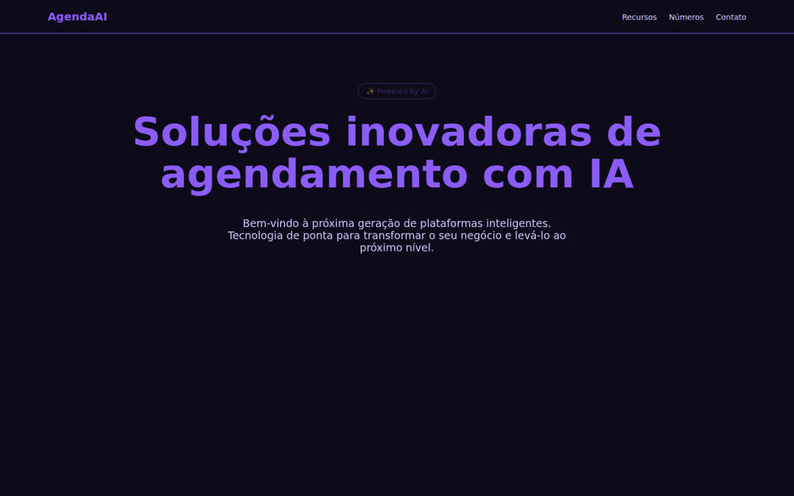
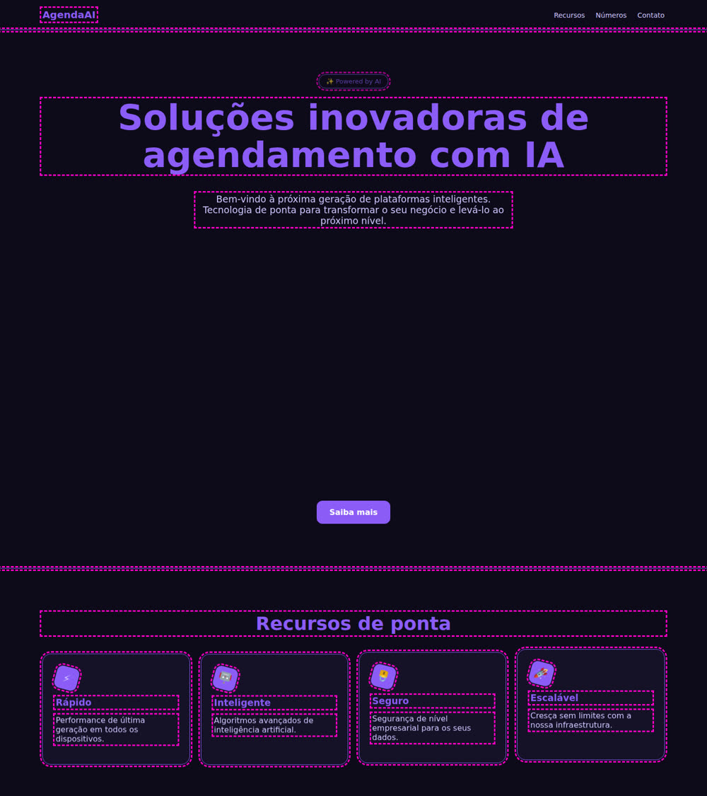
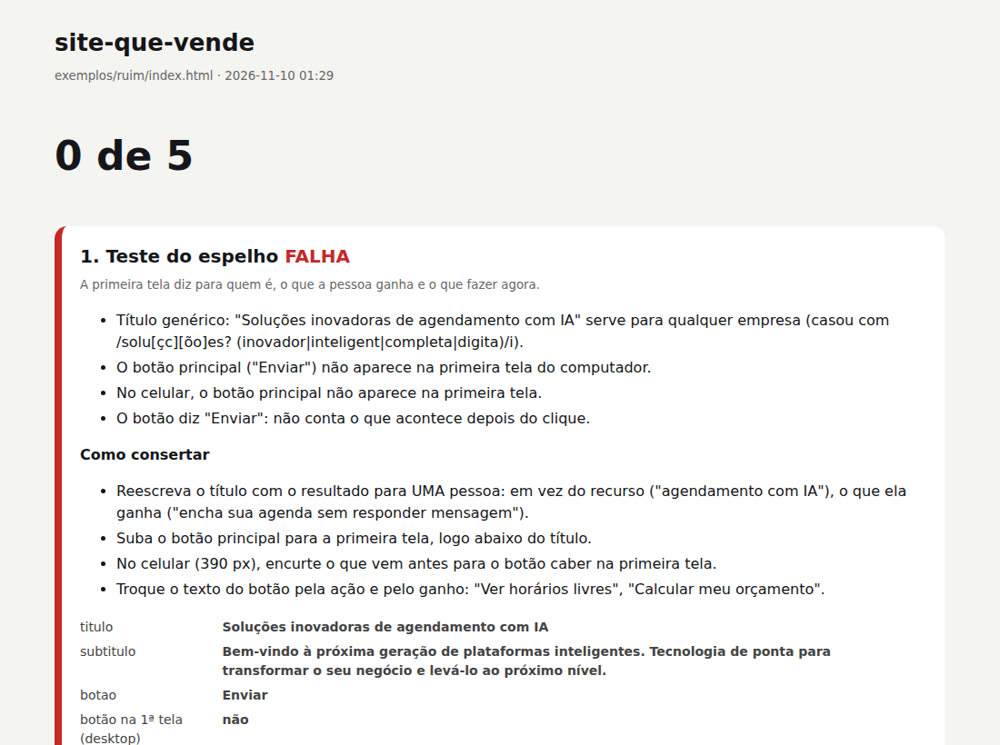

Siempre son los mismos 5 motivos. Este kit mide los 5 en tu página y te dice qué corregir.
El site-que-vende es un kit que mide, en el navegador, los cinco patrones que distinguen el sitio que atrae clientes del sitio «bonito y barato» hecho con IA, y te dice qué corregir. Sirve para quienes tienen un negocio pequeño o crean sitios para negocios pequeños. El kit abre tu página en la computadora y en el celular, mide texto, color, capas, movimiento y muestra gratis, y te entrega un informe con la lista de correcciones lista para copiar y pegar en tu agente de código (el programa de IA que edita los archivos por ti). Para usarlo, necesitas Node.js y una terminal.
La vista entrenada se cansa y discrepa. El auditor abre la página real, en 1440×900 y en 390×844, y mide siempre de la misma manera.
El texto de la primera pantalla, dónde aparece el color del botón, las capas, qué se mueve y si hay algo que el visitante pueda probar. El resultado va de 0 de 5 a 5 de 5.
Además del informe para abrir en el navegador, guarda el consertar.md: qué falló y qué hacer, listo para pegar en Claude Code, Codex o Cursor.
Un archivo, amostra.js, con calculadora y quiz configurados mediante JSON. Sin dependencias, sin conexión, sin recopilar nada.
| Elemento | Archivo | Función |
|---|---|---|
| Auditor | skill/site-que-vende/scripts/auditar.js | abre la página (URL o archivo), mide los 5 patrones, guarda relatorio.html, relatorio.json, consertar.md y las capturas |
| Mediciones | skill/site-que-vende/scripts/medir.js | el código que se ejecuta dentro de la página (color, botón, capas, movimiento, muestra) |
| Muestras | skill/site-que-vende/amostras/amostra.js | <amostra-calculadora> y <amostra-quiz>: un archivo, sin dependencias, configurados mediante JSON |
| Skill | skill/site-que-vende/SKILL.md | los 5 pasos para el agente: brief, medir, corregir, medir de nuevo, revisión humana |
| Brief | skill/site-que-vende/referencias/brief.md | las preguntas antes del diseño y el pedido listo para pegar |
| Ejemplos | exemplos/ruim/ y exemplos/bom/ | el mismo negocio ficticio: uno falla en los 5 patrones y el otro los supera |
| Claves de las muestras | skill/site-que-vende/referencias/amostras.md | todas las claves del JSON del quiz y de la calculadora, las variables de color y el evento de resultado |
| Pruebas | tests/rodar.sh | 38 verificaciones: el ejemplo malo falla por el motivo correcto, el bueno pasa, las muestras funcionan y 7 casos que ya habían engañado al auditor siguen saliendo bien |
Para cada patrón: la idea, el número de la prueba, qué mide el auditor y cómo corregirlo. Las cifras provienen de pruebas publicadas por quienes las realizaron. Cuando la cifra proviene de quien vende la herramienta, se indica.
La primera pantalla dice para quién es, qué gana la persona y qué debe hacer ahora.
Cuando la persona adecuada llega a la primera pantalla, tiene que verse reflejada: su problema, su mundo y una señal clara de que está en el lugar correcto.
Una página de empleos para camioneros se rehízo pensando en los conductores, después de escucharlos: la mitad accedía desde el celular, el título no ofrecía ningún beneficio y la foto era un apretón de manos de un banco de imágenes.
No mide si el texto es verdadero ni si se dirige a la persona adecuada. Por eso devuelve las tres preguntas de la revisión humana.
El color de acento solo aparece en lo que se puede clicar.
Si marcas una línea del libro, la encuentras en dos segundos. Si marcas todo, no marcaste nada. La IA pone el color de acento en el título, los íconos, el borde, el fondo y el botón. Entonces el botón desaparece.
La imagen desktop-marca-texto.png marca cada uso incorrecto. Mira un ejemplo real en Antes y después.
Escenario atrás, contenido en el medio, botón adelante.
En un sitio barato, todo está aplanado en el mismo plano y la vista no sabe por dónde empezar. En un escenario hay un decorado pintado, los muebles y el actor. En el sitio: fondo (foto o forma), medio (el contenido), frente (el botón).
Texto listo al instante, una cosa se mueve por pantalla, se puede desactivar.
La animación es la forma más rápida de hacer que un sitio parezca costoso y también de que parezca hecho por IA. Cada animación necesita una función: mostrar el producto, indicar el siguiente paso o mostrar lo que acaba de pasar.
prefers-reduced-motion: reduce: deben ser cero.@media (prefers-reduced-motion: reduce), desactiva todo.El visitante prueba el resultado antes de dejar sus datos de contacto.
Casi todos los sitios lo explican todo y entregan un formulario. Es mejor dejar que la persona pruebe el resultado antes de pedirle cualquier cosa. Valoramos más lo que ayudamos a crear. Cuando la persona introduce sus números, el resultado es suyo.
Busca el nombre para leer el original. Ninguno es una medición nuestra.
| Número | Origen |
|---|---|
| 12,1% → 21,7% (79,3% mejor) | estudio de caso de la agencia de conversión CXL sobre la página de registro del sitio de empleos TruckersReport |
| +90% de clics a la página de precios | prueba A/B de posicionamiento de CityCliq (título "Create a webpage for your business") |
| +31,4% de conversión al repetir la palabra buscada | prueba de texto dinámico en una página de destino de Campaign Monitor |
| Parallax: más divertido y con apariencia más profesional, sin mejorar la experiencia de uso en general | disertación "The effects of parallax scrolling on user experience and preference in web design", Universidad Purdue |
| El movimiento atrae la atención, para bien y para mal | artículos de Nielsen Norman Group sobre animación en interfaces |
| Cerca de un tercio de los adultos mayores de 40 con disfunción del oído interno | encuesta nacional de salud de EE. UU. analizada por Johns Hopkins (publicada en 2009) |
| Efecto IKEA (valoramos más lo que ayudamos a armar) | Norton, Mochon y Ariely, "The IKEA effect: When labor leads to love" (2012) |
| Calculadora de ortodoncia con cerca del 45% de conversión | caso divulgado por Outgrow, la empresa que vende la herramienta (no es un estudio independiente) |
| Regla 60/30/10 | regla práctica de decoración de interiores, no es un estudio |
Las dos páginas son de una empresa ficticia de agenda para peluqueras. El auditor tomó las fotos de abajo.

| Medida | Ejemplo malo | Ejemplo bueno |
|---|---|---|
| Título | "Soluções inovadoras de agendamento com IA" (Soluciones innovadoras de agenda con IA) | "Encha sua agenda sem responder mensagem." (Llena tu agenda sin responder mensajes.) |
| Botón principal | "Enviar", fuera de la primera pantalla | "Ver quanto meu horário vago custa" (Ver cuánto cuesta mi horario disponible), en la primera pantalla de la computadora y el celular |
| Color del botón sin clic | 35 lugares | 0 |
| Fondo de la primera pantalla | color liso | imagen de fondo |
| Piezas que cruzan el borde de una sección | 0 | 1 |
| Elementos con sombra | 0 | 3 |
| Cosas que se mueven en la misma pantalla | 4 | 1 |
| Se mueven con "reducir movimiento" activado | 4 | 0 |
| Muestra gratis | no: solo formulario de contacto | amostra-calculadora, 2 campos, responde de inmediato |


relatorio.html muestra la calificación, cada falla medida, qué hacer y las medidas una por una. (Captura en portugués.)Necesitas tener Node.js y git instalados. Los comandos son para la terminal bash o zsh (Linux y Mac; en Windows, usa WSL).
Para comprobar: node -v y git --version deben responder con un número de versión. WSL es la terminal Linux que Microsoft ofrece dentro de Windows (cómo instalar). Desde el paso 2 en adelante, ejecuta los comandos dentro de la carpeta site-que-vende.
El auditor usa Playwright, que controla un Chromium propio. La instalación se hace una sola vez.
git clone https://github.com/inematds/site-que-vende && cd site-que-vende cd skill/site-que-vende/scripts && npm install && npx playwright install chromium && cd -
Pasa la dirección del sitio o la ruta de un archivo HTML. La carpeta de --saida recibe el informe.
node skill/site-que-vende/scripts/auditar.js https://seusite.com.br --saida auditoria
Con un archivo en lugar de la dirección:
node skill/site-que-vende/scripts/auditar.js minha-pagina/index.html --saida auditoria
auditoria/ (capturas e informe). Agrega auditoria/ al .gitignore del sitio.fetch, cualquier solicitud que no sea GET) y cualquier intento de conectarse a otra dirección. No se envía nada al sitio y el informe enumera lo que se bloqueó.data-cta (<a data-cta href="...">). En un sitio que no puedes editar, ejecuta el comando con --cta "selector-css".../) y no está en un repositorio git: pasa --raiz <carpeta que contiene todo>. El auditor avisa cuando algún archivo devuelve 404.node skill/site-que-vende/scripts/auditar.js --help muestra todas las opciones.Esta es la salida real del ejemplo malo de este repositorio (node skill/site-que-vende/scripts/auditar.js exemplos/ruim/index.html --saida auditoria):
site-que-vende · exemplos/ruim/index.html
FALHA 1. Teste do espelho
- Título genérico: "Soluções inovadoras de agendamento com IA" serve para qualquer empresa (o trecho "Soluções inovador" não diz nada sobre o cliente).
- O botão principal ("Enviar") não aparece na primeira tela do computador.
- No celular, o botão principal não aparece na primeira tela.
- O botão diz "Enviar": não conta o que acontece depois do clique.
FALHA 2. Regra do marca-texto
- A cor do botão (#8b5cf6) aparece em 35 lugares que não são clique (9 borda, 11 texto, 11 título, 4 ícone ou selo). Veja desktop-marca-texto.png.
FALHA 3. Frente, meio e fundo
- A primeira tela é uma caixa de cor lisa: não há foto, forma nem degradê atrás do texto.
- Nenhuma peça atravessa a borda de uma seção: a página é uma pilha de caixas.
- Nenhum elemento tem sombra: tudo está no mesmo plano.
FALHA 4. Movimento com função
- O título não está legível 0,4 s depois de a página abrir, no computador e no celular (opacidade 0.39): o visitante espera a animação.
- 4 coisas se movem ao mesmo tempo na tela 2 (div.cartao, div.cartao, div.cartao, div.cartao).
- Com "reduzir movimento" ligado no aparelho, 4 elemento(s) continuam se movendo.
FALHA 5. Amostra grátis
- A página explica e entrega um formulário de contato: não há nada para o visitante experimentar.
0 de 5 padrões passam. Relatório: auditoria/relatorio.html
O que consertar (cole no seu agente): auditoria/consertar.md
Los mensajes del auditor, el relatorio.html y el consertar.md salen en portugués. Abajo está la misma salida traducida, solo para leerla. Puedes pegar el consertar.md tal como está en tu agente y pedirle que responda en tu idioma.
site-que-vende · exemplos/ruim/index.html
FALLA 1. Prueba del espejo
- Título genérico: "Soluções inovadoras de agendamento com IA" sirve para cualquier empresa (el fragmento "Soluções inovador" no dice nada sobre el cliente).
- El botón principal ("Enviar") no aparece en la primera pantalla de la computadora.
- En el celular, el botón principal no aparece en la primera pantalla.
- El botón dice "Enviar": no cuenta qué sucede después del clic.
FALLA 2. Regla del resaltador
- El color del botón (#8b5cf6) aparece en 35 lugares que no son clicables (9 bordes, 11 textos, 11 títulos, 4 iconos o sellos). Consulta desktop-marca-texto.png.
FALLA 3. Frente, medio y fondo
- La primera pantalla es un bloque de color liso: no hay foto, forma ni degradado detrás del texto.
- Ningún elemento atraviesa el borde de una sección: la página es una pila de bloques.
- Ningún elemento tiene sombra: todo está en el mismo plano.
FALLA 4. Movimiento con función
- El título no es legible 0,4 s después de que se abra la página, ni en la computadora ni en el celular (opacidad 0.39): el visitante espera la animación.
- 4 cosas se mueven al mismo tiempo en la pantalla 2 (div.cartao, div.cartao, div.cartao, div.cartao).
- Con «reducir movimiento» activado en el dispositivo, 4 elemento(s) siguen moviéndose.
FALLA 5. Muestra gratis
- La página explica y ofrece un formulario de contacto: no hay nada que el visitante pueda probar.
0 de 5 patrones pasan. Informe: auditoria/relatorio.html
Qué corregir (pega en tu agente): auditoria/consertar.md
El número de opacidad en la línea del patrón 4 cambia un poco en cada ejecución, porque depende del momento de la medición.
En la carpeta auditoria/ están: relatorio.html (para abrir en el navegador), relatorio.json (las medidas), consertar.md (la lista de tareas) y las capturas desktop-tela1.png, celular-tela1.png, desktop-pagina.png y desktop-marca-texto.png.
Código de salida: 0 pasaron los cinco, 1 falló alguno, 2 error de uso o la página no abrió. Sirve en CI (la verificación automática que se ejecuta con cada cambio en el código).
Pega el auditoria/consertar.md en tu agente de código, junto con la página. El orden va del patrón 1 al 5: texto antes que color, color antes que capa. Sin agente, abre el relatorio.html y haz las correcciones a mano: cada falla indica qué hacer.
Repite los pasos 2 a 4. No modifiques el auditor ni las reglas para aprobar. Si después de 3 vueltas un patrón sigue fallando, detente y revisa la medida: puede ser una decisión tuya.
El auditor no evalúa el texto. Mira auditoria/desktop-tela1.png y auditoria/celular-tela1.png y responde las tres preguntas que cierran el consertar.md:
Una skill es una carpeta con un archivo SKILL.md: las instrucciones que sigue el agente. La de este kit le indica al agente que haga el brief, mida, corrija, vuelva a medir y se detenga para que hagas tu revisión.
Dentro de la carpeta del kit, crea el acceso directo en la carpeta de skills de Claude Code:
mkdir -p ~/.claude/skills ln -s "$PWD/skill/site-que-vende" ~/.claude/skills/site-que-vende
Claude Code lee ~/.claude/skills/site-que-vende/SKILL.md cuando comienza una sesión. Abre una sesión nueva y pide: "audita mi sitio con site-que-vende" o "¿por qué mi sitio no convierte?". Si no lo carga por sí solo, di: "lee ~/.claude/skills/site-que-vende/SKILL.md y sigue los pasos".
Dentro de SKILL.md, las rutas (scripts/, amostras/, referencias/) son relativas a la carpeta de la skill, que llama $KIT. El agente trabaja en la carpeta de tu sitio: ejecuta el auditor con node $KIT/scripts/auditar.js y copia $KIT/amostras/amostra.js al sitio.
En Codex o en Cursor, abre la carpeta del kit y di: "lee skill/site-que-vende/SKILL.md y sigue los pasos".
Sin ningún agente, el proceso manual es el de los seis pasos anteriores: el auditor y las muestras funcionan por sí solos, y el relatorio.html indica qué hacer ante cada falla.
Para verificar el kit: bash tests/rodar.sh realiza 38 verificaciones y debe terminar en TUDO OK.
data-cta en un botón oculto o esconder elementos solo para que el auditor apruebe. Cambiar el texto que escribió el dueño cuando ya responde las tres preguntas. Pedir el correo electrónico antes de mostrar el resultado de la muestra.Copia skill/site-que-vende/amostras/amostra.js en tu sitio, pega la etiqueta y cambia el JSON por los números de tu negocio. No se envía nada a ningún servidor.
<amostra-calculadora>
<script type="application/json">
{ "titulo": "Quanto custa pintar a sua casa?", "base": 350,
"campos": [
{"rotulo": "Área de parede", "tipo": "faixa", "min": 20, "max": 300, "passo": 10, "valor": 80, "unidade": "m²", "porUnidade": 28},
{"rotulo": "Acabamento", "tipo": "opcoes", "opcoes": [{"rotulo": "Econômico", "vezes": 1}, {"rotulo": "Premium", "vezes": 1.6}]}
],
"margem": 12, "prefixo": "Sua pintura fica entre",
"botao": {"texto": "Receber o orçamento exato", "href": "#contato"} }
</script>
</amostra-calculadora>
<script src="amostra.js"></script>
El color del botón viene de tu página:
:root { --amostra-destaque: #c2410c; }
También puedes ajustar --amostra-destaque-texto, --amostra-fundo, --amostra-texto, --amostra-borda y --amostra-raio. La muestra hereda la fuente de la página y no tiene animación.
Cambia el área y el acabado: el resultado cambia al instante. Eso es lo que mide el patrón 5. Ver el quiz y la calculadora en la página de ejemplo (en portugués).
| Etiqueta | Claves | Cómo funciona |
|---|---|---|
<amostra-calculadora> | titulo, subtitulo, base, campos, margem, arredondar, prefixo, sufixo, botao, nota, moeda, idioma, ate | resultado = (base + suma de los campos) × multiplicadores, mostrado como rango (más o menos el margen). El campo "tipo": "faixa" usa porUnidade; con "multiplica": true se incluye como multiplicador. El campo "tipo": "opcoes" usa soma o vezes. |
<amostra-quiz> | titulo, perguntas, resultados, prefixo, refazer, textoPergunta, idioma | cada opción suma pontos a uno o más resultados; gana el que tenga más puntos. Cada resultado tiene titulo, texto y botao. |
Las claves del JSON están en portugués (titulo, campos, rotulo); los valores son tuyos, en cualquier idioma. Los textos fijos (el contador del quiz, el separador entre los dos valores del rango, "Estimación", "Responder de nuevo") aparecen en portugués, inglés o español según el idioma del JSON o el lang de la página, y puedes cambiar cada uno en el JSON. Ambas etiquetas disparan el evento amostra-resultado cuando cambia el resultado: sirve para medir el uso sin recopilar datos personales. Si el JSON es inválido o está incompleto, aparece un mensaje en el lugar de la muestra (por ejemplo, amostra-quiz: falta a lista "perguntas"). Todas las claves, incluidas multiplica, margem, moeda e idioma, las variables CSS y el evento están en referencias/amostras.md (en portugués).
Responde antes de pedirle la página a la IA y pega las respuestas en el pedido. Sin ellas, la IA escribe para «cualquier empresa» y ningún diseño lo soluciona.
Cambia lo que está entre < > por tus respuestas. El número de cada campo corresponde a la pregunta anterior.
Crea la página de <negocio>. Para quién es: <1> Qué gana la persona: <2> Acción principal (un botón, marcado con data-cta): <3> Palabra que usa: <4> Muestra gratis (responde a «<5>»): copia el archivo amostra.js del kit site-que-vende (skill/site-que-vende/amostras/) en este sitio y usa <amostra-calculadora> o <amostra-quiz>; estos son los números: <...> Colores: fondo <hex>, estructura <hex>, acento <hex> (el acento solo en botones y enlaces). Primera pantalla: título, una línea de apoyo y el botón, listos y sin animación, con una foto real de fondo. Una pieza cruza el borde de la primera sección. Sombra solo en el botón y en la tarjeta principal. Como máximo, una cosa se mueve por pantalla, y nada se mueve con prefers-reduced-motion: reduce. No inventes testimonios, cifras ni clientes. Después ejecuta el auditor del kit: node <carpeta-del-kit>/skill/site-que-vende/scripts/auditar.js index.html y corrige hasta obtener 5 de 5.
data-cta es un atributo que agregas al HTML del botón principal (<a data-cta href="...">) para indicarle al auditor cuál es. Si no marcas ninguno, el auditor elige el botón relleno más grande de la primera pantalla e indica en el informe cuál eligió. <carpeta-del-kit> es la carpeta donde clonaste site-que-vende.
Tú decides lo que solo tú sabes. La IA escribe y corrige. El script mide sin gastar tokens.
| # | Paso | Qué sucede | Quién lo hace |
|---|---|---|---|
| 1 | Brief | responder las preguntas del brief: para quién, qué gana, qué hace ahora, tres colores, pregunta de la muestra | 👤 tú, con la 🧠 IA |
| 2 | Página | la IA genera la página con el pedido listo del brief (o ya tienes el sitio en línea) | 🧠 IA |
| 3 | Medir | node skill/site-que-vende/scripts/auditar.js <url o archivo> --saida auditoria | ⚙️ script |
| 4 | Corregir | pegar auditoria/consertar.md en el agente; corregirá solo lo que falló, en el orden del 1 al 5 | 🧠 IA |
| 5 | Muestra | si falló el patrón 5: copiar amostras/amostra.js y configurar el quiz o la calculadora con los números del negocio | 👤 tú, con la 🧠 IA |
| 6 | Medir de nuevo | repetir 3 y 4 hasta 5 de 5 (máximo 3 rondas; después de eso, la decisión es tuya) | ⚙️ script |
| 7 | Revisión humana y publicar | mirar desktop-tela1.png y celular-tela1.png, responder las tres preguntas de la Prueba del espejo, publicar | 👤 tú |
Lo que el auditor no ve, dicho con todas las letras.
<canvas> o WebGL cuenta como una sola cosa.